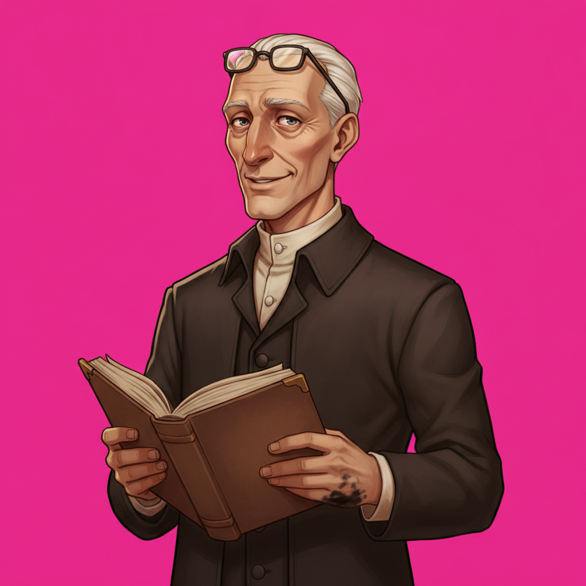
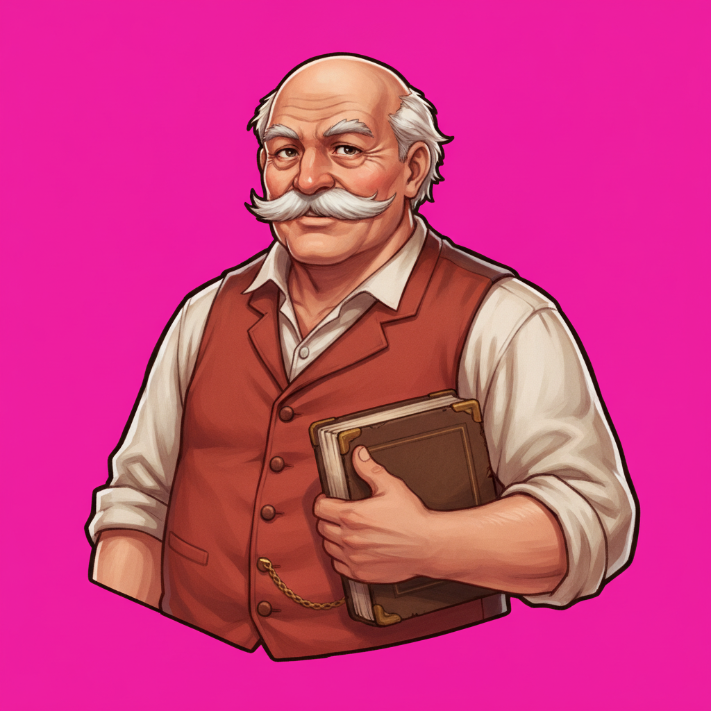
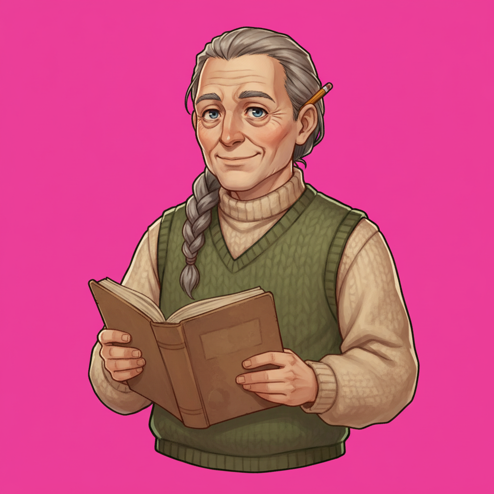
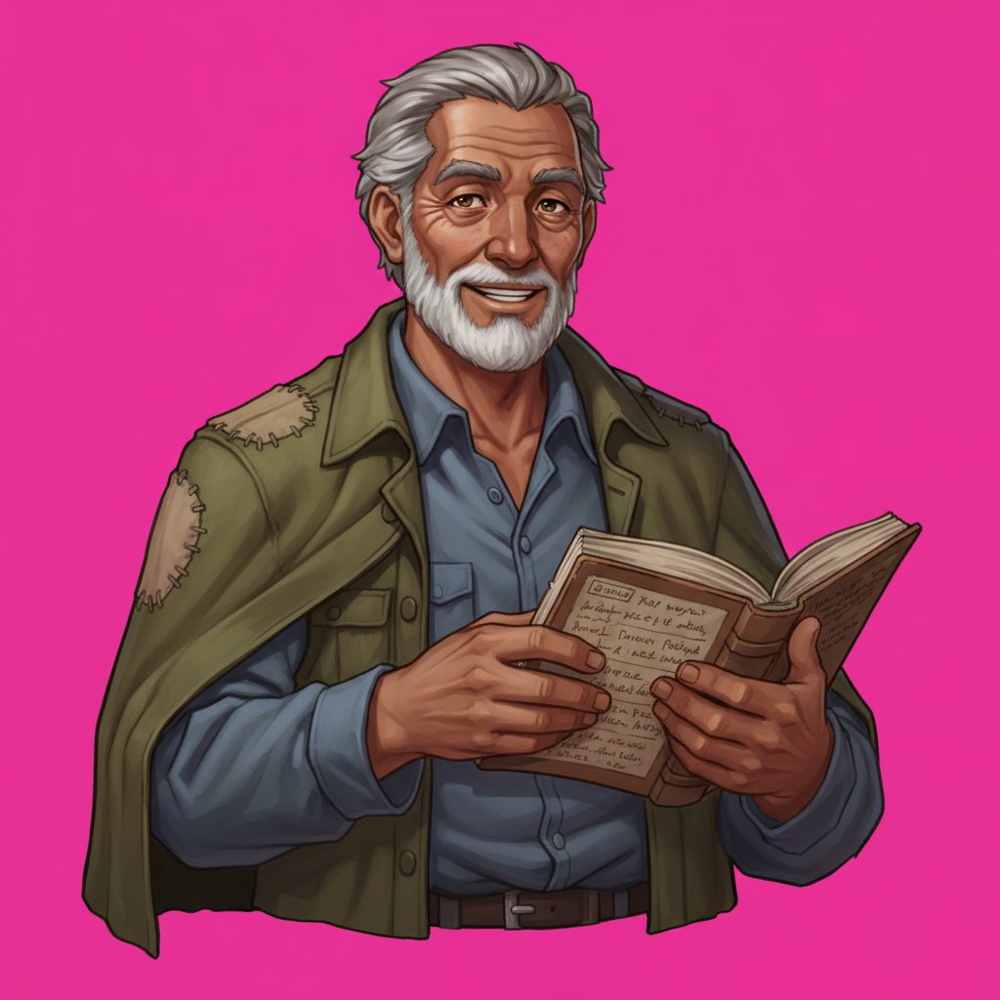

User ruling: Rowan gets a makeover. Same ROLE — village elder and ledger-keeper, seventies,
warm/sly/knowing, distinguished, not magical, the ledger stays — with the visual identity
varied meaningfully. No anchor on the old art; these are fresh rolls from the description axis.
Waist-up on the flat key, to the new framing spec. Pick one and it becomes the new anchor: full
waist-up expression set, new bust.png, and the old Rowan art retires everywhere.

a · lean and hawkish tall and spare, long sharp-boned face, beaky nose, close-cropped white hair, wire spectacles pushed up, narrow dark coat, ink-stained cuff

b · broad and hale barrel-chested and ruddy, bald crown, magnificent white moustache, shirtsleeves over a rust-red waistcoat and brass watch-chain

c · neat and birdlike small and precise, round kindly face, long grey braid, layered village knits, pencil behind one ear

d · weathered outdoorsman sun-lined, short white beard, iron-grey hair, patched olive canvas coat over one shoulder, faded blue workshirt